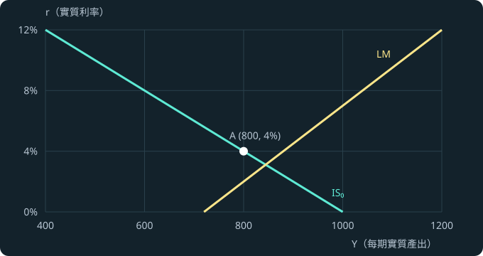

CH. 04 / THE TRADITIONAL LM CURVE
傳統 LM：固定貨幣供給
所得增加時，為什麼需要較高利率才能維持貨幣市場均衡？
讀完這一頁，你應該能夠
- 由貨幣市場均衡推導 LM
- 聯立 IS–LM 計算產出與利率
- 判斷貨幣供給變動的方向
先備知識：IS：商品市場的均衡；基本代數運算。
01概念理解
傳統 LM 曲線代表貨幣市場均衡。固定名目貨幣供給 M 與物價 P 時，實質供給 M/P 固定。所得提高增加交易需求，需要較高利率抑制部分貨幣需求，因此 LM 向右上方傾斜。
換個角度理解 · 生活譬喻
像可立即使用的支付餘額供給固定，但大家交易變多；利率提高讓部分人願意少留流動資金，讓需求重新配合固定供給。
譬喻的限制：這是貨幣需求與資產選擇的比喻，不代表央行在每筆交易中逐一分配現金，也不代表現實央行一定固定 M。
02公式與假設
固定 M、P 與預期通膨 πᵉ。L = kY − hi，k,h > 0，i ≈ r + πᵉ。以下數值例題設定 πᵉ = 0，所以 i = r。
貨幣市場均衡
LM；斜率 k/h > 0
| 符號 | 意義與單位 |
|---|---|
| M/P | 實質貨幣供給 |
| k | 實質貨幣需求對產出的反應係數 |
| h | 貨幣需求對小數名目利率的反應係數 |
| r、πᵉ | 實質利率、預期通膨 |
| Y | 每期實質產出 |
03逐步推導
- 由 M/P = kY − h(r + πᵉ) 移項：h(r + πᵉ) = kY − M/P。
- 除以 h 再減 πᵉ，得到 LM。
- 固定 M/P 與 πᵉ 時，Y 增加需要 r 增加以減少貨幣需求。
- M 增加或 P 降低會提高 M/P；相同 Y 所需的 r 降低，LM 下移／右移。
- 聯立 IS 與 LM 才能同時決定短期 Y 與 r。

04例題與練習
EXAMPLE / 例題
自編例題：IS 為 Y = 1,000 − 5,000r，L = 0.5Y − 1,000r，M/P = 360，πᵉ = 0。求均衡。
查看解答與步驟
- 將 IS 代入 LM：360 = 0.5(1,000 − 5,000r) − 1,000r。
- 整理：3,500r = 140，得到 r = 0.04 = 4%。
- Y = 1,000 − 5,000 × 0.04 = 800。
- 驗算貨幣市場：0.5 × 800 − 1,000 × 0.04 = 360。
YOUR TURN / 換你練習
自編練習：維持 IS，實質貨幣供給從 360 增為 395。求新均衡與 LM 位移方向。
查看解答與步驟
395 = 500 − 3,500r，得 r = 0.03 = 3%，Y = 850。檢核：425 − 30 = 395。LM 下移／右移，均衡產出增加、利率下降。
05常見錯誤
Y 上升使 LM 右移
Y 是橫軸變數。
正確判斷 → 固定其他條件時是沿 LM 移動。M 增加讓 LM 上移
實質供給增加使相同 Y 所需利率降低。
正確判斷 → 先用方程式看 r 的變化。央行直接控制 M/P 的兩部分
央行設定 M 不等於直接設定 P。
正確判斷 → 只有 P 固定時，M 與實質供給同步。06考前重點
- 傳統 LM 的前提是固定 M 與 P。
- M/P 增加使 LM 下移／右移。
- i 與 r 之間必須交代預期通膨。
07參考資料
課堂資料
04 The IS-LM Model and Aggregate Demand.pdf
講義日期：2026/11/6；第 13–18 頁（依 PDF 頁序）。來源由使用者提供。
自編教學整理
生活譬喻、線性代數推導、圖形及數值題依課堂概念自編，並非逐字講義或老師指定題目。本篇未引用外部資料；模型延伸與近似條件已在正文說明。原始 PDF 未公開附載。
接著連起來看
閱讀紀錄保存在此瀏覽器；已讀不代表已熟練。